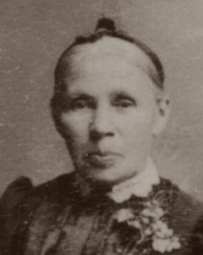

Anna Elisabeth Baer:

Anna Elisabeth Baer was one of the richest merchants in the latter half of the 18th-century in Turku, Finland. Her
husband, who was a merchant, died before her, and she ran a family business for
nearly thirty years after his death.She sent a few petitions relating to
business to the Swedish Collegium of Commerce She was a shipowner.
She wanted to vote in the Riksdag elections in Turku in 1771, and sent a letter to the governor regarding the matter.